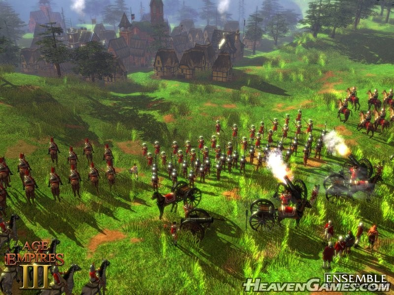
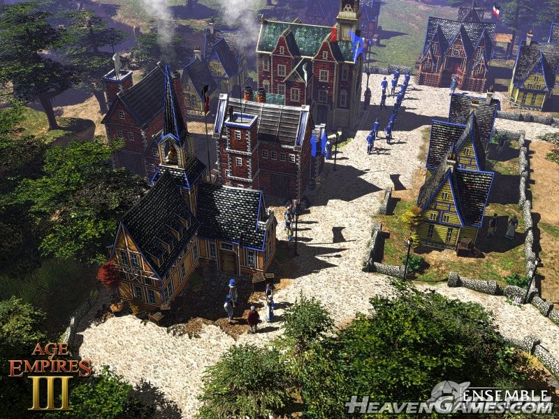
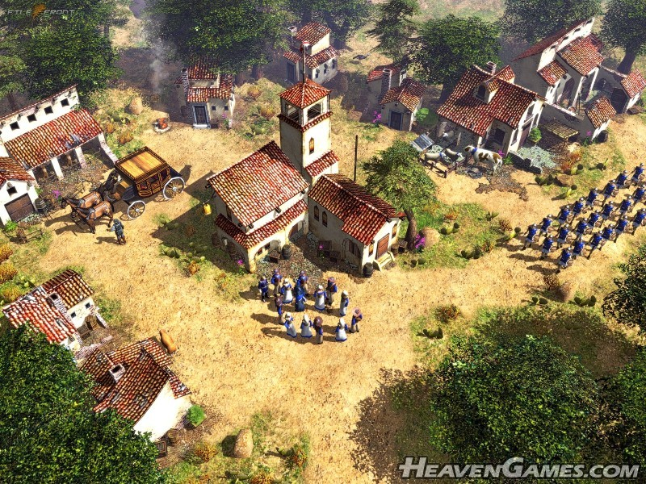

Age of Empires III
Age of Empires III je real-time strategie vyvinuta Ensemble Studios a vydána Microsoft Game Studios. Verze na PC byla vydána 18. října 2005.
Byly vydány 2 expanze: The Warchiefs, vydána 17. října 2006, která přinesla 3 nové indiánské národy, a The Asian Dynasties, vydána 23. řijna 2007, se třemi asijskými národy.
Remasterovaná verze obsahující 3 další národy byla ohlášena 21. srpna 2017 a byla vydána 15. října 2020.
Hra líčí evropskou kolonoziaci Ameriky přibližně mezi 1492 a 1876. Zde se hráč snaží vybudovat silnou kolonii a proměnit ji z malé osady na velkou říši. Hráč si projde 5 'věky', stupni technologie, s každou další odemykající nové jednotky a vylepšení.
Nové vlastnosti hry
Gameplay
Hráč začíná s městským centrem, průzkumníkem a osadníky (či pouze průzkumníkem a krytým wagonem dle typu hry). Narozdíl od ostatních her v sérii se zde hojně vyskytují zbraně se střelným prachem, tedy dělostřelectvo a vojenská družstva vybavená puškami. Hráči mají na začátku celou mapu zakrytou a musí ji prozkoumat (spojenci sdíli prozkoumanou mapu). Hráč musí také těžit 3 základní suroviny: jídlo, dřevo a peníze(zlato), které potom mohou využít k výcviku dalších jednotek, stavbě budov a zkoumání nových technologií. Tyto akce, společně s eliminací nepřátelských jednotek dávají hráči zkušenosti. Přesáhnou-li určitou hranici, hráč získá právo na dovoz zásob z domovského města ve formě surovin, jednotek či unikátních technologií. Jakmile si hráč vybuduje silnou kolonii, může zaútočit a začít ničit ostatní kolonie. Nepřítel také může navrhnout kapitulaci sám.
 Věky
Podobně jako u ostatních RTS her, hráč může postoupit několika technlogickými fázemi, které odemykají nová vylepšení, jednotky a budovy. Těm se v AoE III říká 'věky', jež znázorňují různá historická období. Je jich 5:
Věk objevů, který znázorňuje objev a průzkum Ameriky Evropany, zde hráči hlavně prozkoumávají mapu a vyvíjejí jejich ekonomiku,
Koloniální věk, který znázorňuje evropskou expanzi do Nového světa a odemyká rané vojenské jednotky.
Věk pevností, který znázorňuje opevňování evropských kolonií, odemyká silné pevnosti a nové, silnější vojáky.
Průmyslový věk, který posiluje koloniální ekonomiku, zčásti kvůli továrnám, které produkují suroviny či dělostřelectvo. Tento věk odemyká všechny karty a jednotky.
Imperiální věk, který odemyká všechna vylepšení a budovy.
Při každém postupu do dalšího věku si hráč volí politika, který mu předá bonusy za úspěšný postup do dalšího věku. Za každých 10 úrovní domovského města se odemyká nový politik.
Civilizace
V AoE III lze hrát za 8 různých civilizací: Španělsko, Velká Británie, Francie, Portugalsko, Holandsko, Rusko, Prusko, Osmanská říše.
Jsou zde i další civilizace, dostupné v kampani nebo v editoru scénáří: Rytíři sv. Jana(hráno jako Španělsko), Žoldáci Johna Blacka(Prusko) a Železniční spol. Falcon/Spojené státy(Britové).
Objevuje se zde 12 různých domorodých kmenů. Nelze za ně hrát, ale lze s nimi navázat alianci a získat tak unikátní jednotky a vylepšení.
Strategie
AoE III obsahuje různé soupeřící strategické školy. Obvykle jdou proti sobě, např. masová výroba nevylepšených jednotek vs. výroba drahých vylepšených jednotek. Tyto strategie se liší mezi AI osobnostmi a v multiplayeru lze narazit na různé styly hraní. Hlavní dělení těchto strategií je: Turtle(kámen)Rush(nůžky) a Boom(papír)
Kampaň
Základní hra obsahuje příběh se 3 částmi: Krev, Led a Ocel. Hlavními postavami jsou členové fiktivní rodiny Blacků, kteří žili v různých obdobích kolonizace Nového světa.
Multiplayer
S hrou přišla aplikace Ensemble Studios Online, která umožňovala hrát s ostatními hráči, ale kvůli stáří hry a popularity remasteru Definitive Edition je doporučeno hrát spíše přes přímé LAN nebo IP připojení.